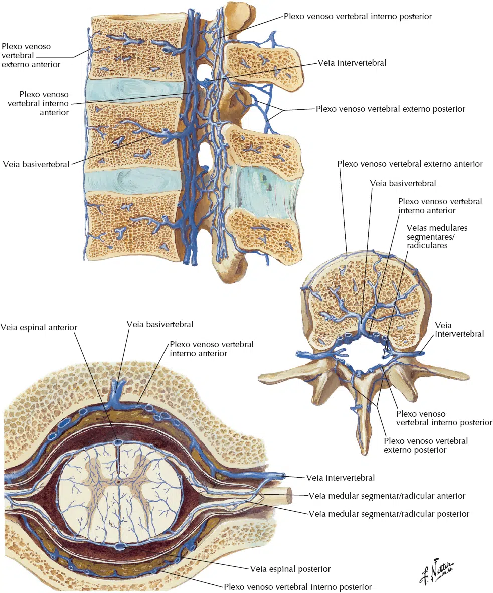

As veias da medula espinal são acompanhantes das artérias espinais.
A drenagem venosa da medula espinal é feita, por dois sistemas:
Vertical / Longitudinal: constituído por uma veia espinhal anterior e uma veia espinhal posterior, que percorrem os sulcos medianos anterior e posterior, respectivamente;
Horizontal: constituído pelas veias radiculares anteriores e posteriores, que drenam nas veias intercostais, veias vertebrais e no sistema das veias ázigos.
As veias espinais se anastomosam com as veias radiculares e com o plexo venoso vertebral interno (localizado no espaço extradural).
O plexo venoso vertebral interno se anastomosa superiormente com os seios da dura-máter e com o plexo venoso vertebral externo.

As veias basivertebrais são provenientes da cavidade óssea da vértebra, para unir-se ao circulo vascular, entre a coluna vertebral e a dura-máter.
Se orientam horizontalmente no corpo vertebral e convergem para trás, para drenarem na veia vertebral anterior interna.